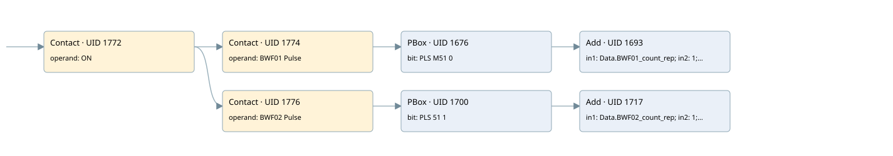

contactor ton passed in bwf
analog input conversion · 검색 색인 순서 46 · 원본 내부 NID 추정 43
백업 PLF 원본의 3159868 바이트 위치에서 복원한 XML. 검색 문서 1776의 객체 키 161022003a6b000000000000와 연결했다. 이름 해석 11/11개. 남은 RefId는 상수 또는 미해석 참조다.
연결 구조 다시 그리기
원본 Part/PCon/Wire를 이용한 연결도다. TIA 화면의 래더 배치 또는 실행 결과를 재현한 그림은 아니다. 핀 연결은 아래 표와 원본 XML을 기준으로 읽는다. 노드 위에 마우스를 두면 피연산자 이름을 볼 수 있다.

접점·코일·블록과 피연산자
| Part UID | Gate | Negated 핀 | 연결 피연산자 |
|---|---|---|---|
| 1772 | Contact | operand = ON | |
| 1774 | Contact | operand = BWF01 Pulse | |
| 1676 | PBox | bit = PLS M51 0 | |
| 1693 | Add | in1 = Data.BWF01_count_rep; in2 = 1; out = Data.BWF01_count_rep | |
| 1776 | Contact | operand = BWF02 Pulse | |
| 1700 | PBox | bit = PLS 51 1 | |
| 1717 | Add | in1 = Data.BWF02_count_rep; in2 = 1; out = Data.BWF02_count_rep |
접점 경로를 펼친 조건식
Contact·O/A·비교기의 원본 연결을 읽기 쉽게 펼친 보조 해석이다. POWER는 전원 레일 시작을 뜻한다. 호출 블록·에지·타이머의 내부 동작과 다중 쓰기 순서는 이 표로 실행 검증하지 않았다. 미해석 핀과 RefId는 원문 연결표에서 확인한다.
| UID | 동작 | 대상 | 원본 접점 경로 | 내용 |
|---|
원본 배선 연결
| Wire UID | 동일 Wire 연결 끝점 |
|---|---|
| 1778 | Powerrail {} ↔ Part 1772.in |
| 1744 | ORef 1721 (ON) ↔ Part 1772.operand |
| 1773 | Part 1772.out ↔ Part 1774.in ↔ Part 1776.in |
| 1745 | ORef 1722 (BWF01 Pulse) ↔ Part 1774.operand |
| 1775 | Part 1774.out ↔ Part 1676.in |
| 1747 | ORef 1723 (PLS M51 0) ↔ Part 1676.bit |
| 21 | Part 1676.out ↔ Part 1693.en |
| 1754 | ORef 1730 (Data.BWF01_count_rep) ↔ Part 1693.in1 |
| 1755 | ORef 1731 (1) ↔ Part 1693.in2 |
| 1756 | Part 1693.out ↔ ORef 1732 (Data.BWF01_count_rep) |
| 1758 | ORef 1733 (BWF02 Pulse) ↔ Part 1776.operand |
| 1777 | Part 1776.out ↔ Part 1700.in |
| 1760 | ORef 1734 (PLS 51 1) ↔ Part 1700.bit |
| 22 | Part 1700.out ↔ Part 1717.en |
| 1767 | ORef 1741 (Data.BWF02_count_rep) ↔ Part 1717.in1 |
| 1768 | ORef 1742 (1) ↔ Part 1717.in2 |
| 1769 | Part 1717.out ↔ ORef 1743 (Data.BWF02_count_rep) |
식별자 해석 근거 11개
| ORef UID | RefId | 이름 | IdentXmlPart 파일 | 해석 방법 |
|---|---|---|---|---|
| 1721 | 1 | ON | 0678-IdentXmlPart.xml | UID/RID + search-text + NID agreement |
| 1722 | 309 | BWF01 Pulse | 0678-IdentXmlPart.xml | UID/RID + search-text + NID agreement |
| 1723 | 310 | PLS M51 0 | 0678-IdentXmlPart.xml | UID/RID + search-text + NID agreement |
| 1730 | 318 | Data.BWF01_count_rep | 0676-IdentXmlPart.xml | UID/RID + search-text + NID agreement |
| 1731 | 147 | 1 | 0675-IdentXmlPart.xml | literal candidate: UID/RID/NID + nearby named declarations + search-text agreement |
| 1732 | 318 | Data.BWF01_count_rep | 0676-IdentXmlPart.xml | UID/RID + search-text + NID agreement |
| 1733 | 319 | BWF02 Pulse | 0678-IdentXmlPart.xml | UID/RID + search-text + NID agreement |
| 1734 | 320 | PLS 51 1 | 0678-IdentXmlPart.xml | UID/RID + search-text + NID agreement |
| 1741 | 326 | Data.BWF02_count_rep | 0676-IdentXmlPart.xml | UID/RID + search-text + NID agreement |
| 1742 | 147 | 1 | 0675-IdentXmlPart.xml | literal candidate: UID/RID/NID + nearby named declarations + search-text agreement |
| 1743 | 326 | Data.BWF02_count_rep | 0676-IdentXmlPart.xml | UID/RID + search-text + NID agreement |
검색 코드 보조 자료
참조 명칭을 찾기 위한 자료이며 실행 순서나 AND/OR 관계는 위 연결표로 확인한다.
"on" "bwf01 pulse" "pls m51 0" add "data".bwf01_count_rep 1 "bwf02 pulse" "pls 51 1" add "data".bwf02_count_rep 1 "data".bwf02_count_rep "data".bwf01_count_rep